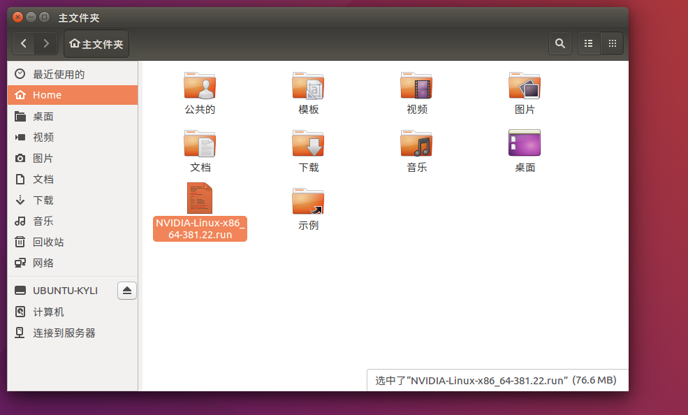
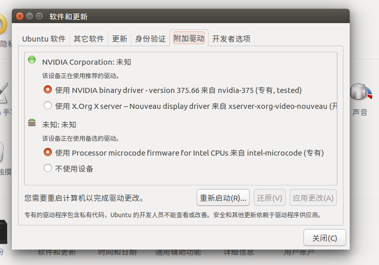
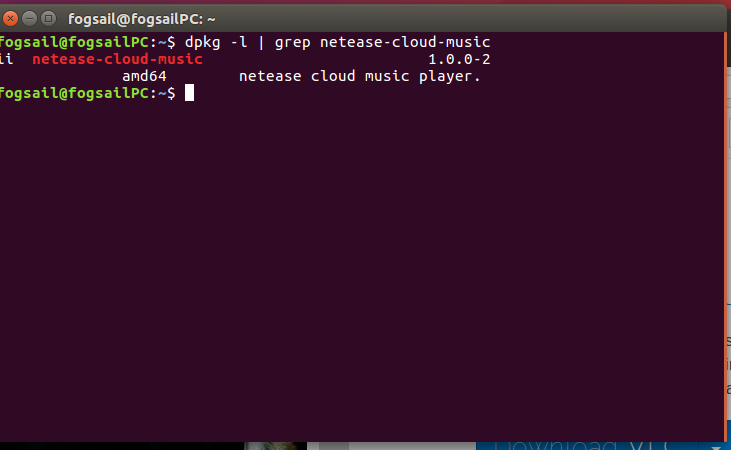
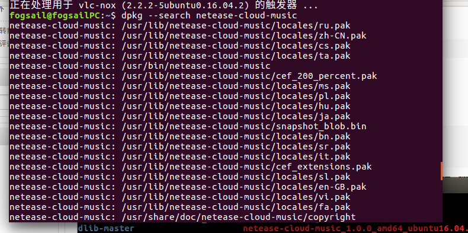
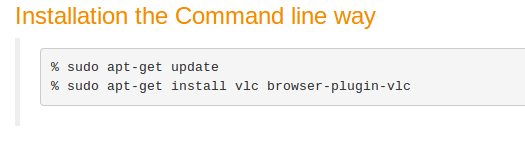
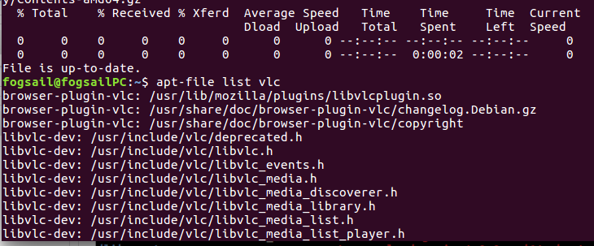
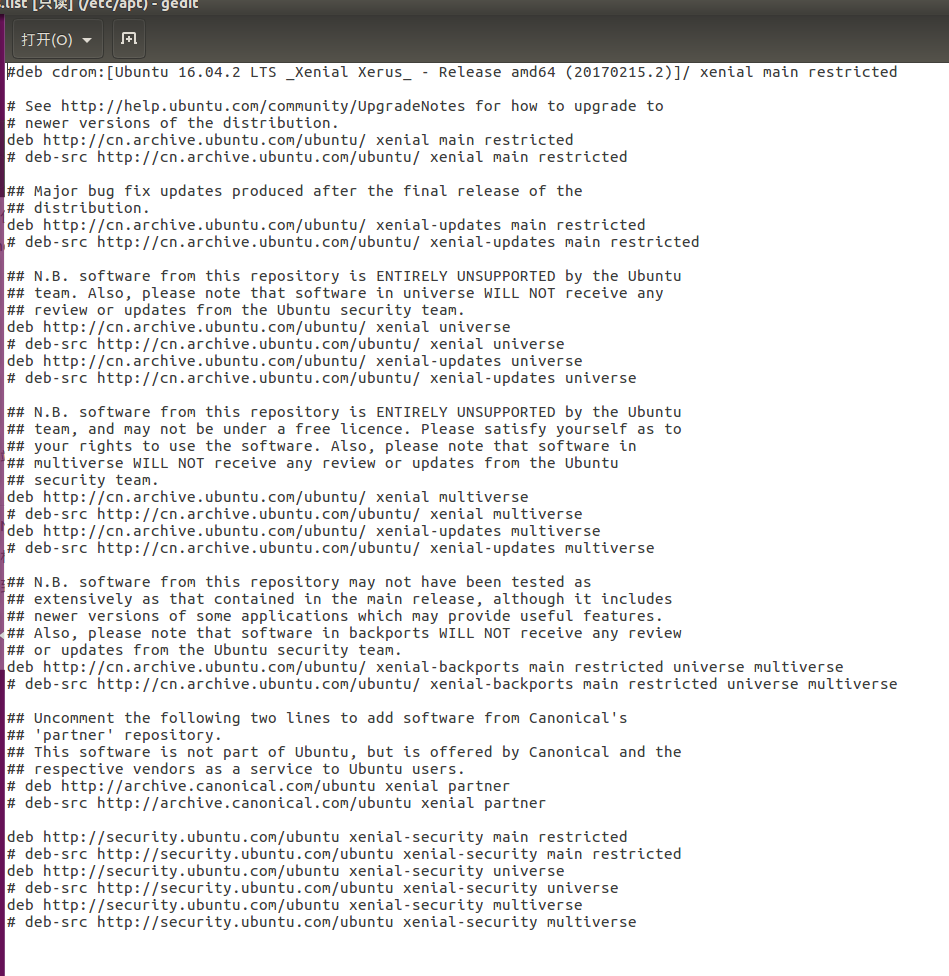
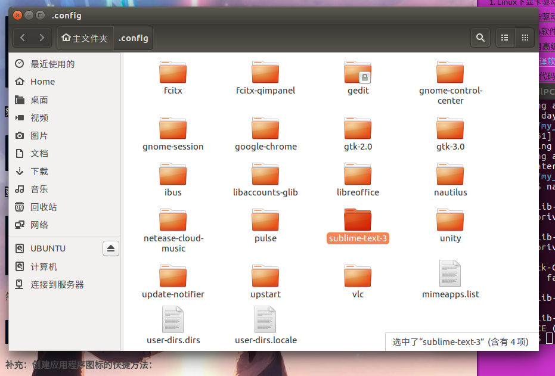
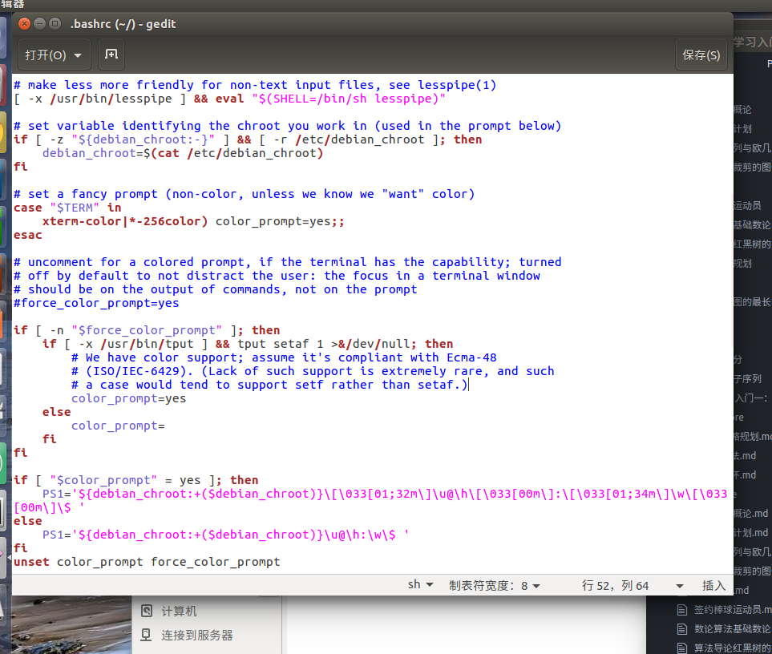

Linux常用命令：Linux系统配置
深度学习无疑是2016年下半年到2017年最火的研究方向了。
深度学习一般都采用Linux系统作为配置。
与Caffe、Theano、Torch、MXNet等框架相比，TensorFlow在Github上Fork数和Star数都是最多的，而且在图形分类、音频处理、推荐系统和自然语言处理等场景下都有丰富的应用。最近流行的Keras框架底层默认使用TensorFlow，著名的斯坦福CS231n课程使用TensorFlow作为授课和作业的编程语言，国内外多本TensorFlow书籍已经在筹备或者发售中，AlphaGo开发团队Deepmind也计划将神经网络应用迁移到TensorFlow中，这无不印证了TensorFlow在业界的流行程度。
首先我先说一下我用的主机配置：
CPU参数
CPU主频: 3.0GHz及以上
CPU型号: Intel I7 6800K
CPU核心数: 六核心
显卡参数
NVIDIA GTX 1080 Ti
内存类型
DDR4 容量8GB*2根
硬盘类型
samsung 256GB M.2接口固态硬盘
主板
华硕 ATX
主板芯片组类型:Intel X99
操作系统
Ubuntu 16.04（LTS）
Linux下显卡驱动的安装
从官方网站上下载GTX 1080 Ti驱动程序
一般放置在以下目录中：
1 | /home/fogsail |
打开终端，输入：
1 | fogsail@fogsailPC:~$ pwd |
查看当前终端所在的文件目录，看一看是不是/home/fogsail
如下图所示：

接下来，为下载的驱动程序添加可执行权限：
1 | sudo chmod 755 NVIDIA-Linux-x86_64-381.22.run |
然后将图形界面切换到命令行界面：
1 | Ctrl+Alt+F2 |
这样就成功切换到命令行状态下了，如果想从命令行状态切换回图形界面
1 | Ctrl+Alt+F7 |
由于这里要装显卡，所以必须把图形界面关掉，在纯字符的页面下输入：
1 | Ctrl+Alt+F2 |
这样就切换到纯命令行了
在纯命令行的状态下
1 | sudo ./NVIDIA-Linux-x86_64-381.22.run |
然后就是安装过程，特别注意，在安装的时候有几个选项：
前几个选项是接受协议什么的
分别选accept、continue installation即可
注意最后一个选项，是要不要将NVIDIA GTX1080 Ti的驱动覆盖原来的默认驱动，并且对原驱动进行更新，这里一定要选择yes
安装完成之后，开启图形界面即可。
这样安装就大功告成了。
当然，在ubuntu 16.04下面安装不用这么麻烦，直接有包如图所示：

Linux下一些驱动的卸载
下载软件包装的驱动
如本例所示，用.run赋予可执行权限安装的驱动，卸载的时候，也需要用到原文件
1 | sudo ./NVIDIA-Linux-x86_64-381.22.run -uninstall |
一般来说，使用软件包安装的驱动，卸载的时候都要用到软件包
使用apt包安装的驱动
一般来说，先看一下有哪些和驱动相关的软件包，如下命令：
1 | apt-cache search nvidia ##搜索带nvidia字样的软件包 |
还有一个常用的命令是
1 | apt-cache depends nvidia ##查询nvidia的依赖关系 |
如果需要删除所有和nvidia相关的组件：
1 | sudo apt-get remove nvidia-* |
Linux下.deb软件包的安装：网易云音乐
第一步，安装包放到/opt
从网易云音乐官方网站上下载ubuntu 16.04软件包.deb
.deb软件包，可以考虑下载完，把.deb的安装文件，放置在：
1 | /opt ##/opt中一般都放置完整的软件包，没有其他依赖关系 |
这里说明一下：
/usr: 系统级的目录，可以理解为C:/Windows，/usr/lib理解为C:/Windows/System32
/usr/local: 用户级的程序目录，这里主要存放那些手动安装的软件，即不是通过“新立得”或apt-get安装的软件。它和/usr目录具有相类似的目录结构。让软件包管理器来管理/usr目录，而把自定义的脚本(scripts)放到/usr/local目录下面，我想这应该是个不错的主意。
可以理解为C:/Progrem Files/。用户自己编译的软件默认会安装到这个目录下。
/opt:用户级的程序目录，可以理解为D:/Software，opt有可选的意思，这里可以用于放置第三方大型软件（或游戏），当你不需要时，直接rm -rf即可。在硬盘容量不够时，也可将/opt单独挂载到其他磁盘上使用。
举个例子：你想尝试最新的firefox测试版吗?那就装到/opt目录下吧，这样，当你尝试完，想删掉firefox的时候，你就可 以直接删除它，而不影响系统其他任何设置。安装到/opt目录下的程序，它所有的数据、库文件等等都是放在同个目录下面。
举个例子：刚才装的测试版firefox，就可以装到/opt/firefox_beta目录下，/opt/firefox_beta目录下面就包含了运 行firefox所需要的所有文件、库、数据等等。要删除firefox的时候，你只需删除/opt/firefox_beta目录即可，非常简单。
源码放在哪里？
/usr/src: 系统级的源码目录
/usr/local/src: 用户级的源码目录
第二步：dpkg安装软件包
1 | sudo dpkg -i netease-cloud-music_1.0.0_amd64_ubuntu16.04.deb |
所有的软件包在安装之前都必须保证所依赖的库和支持构造已经安装在系统中。不过可以使用–force来强制安装软件包，这个时候系统将忽略一切兼容问题直到软件包安装完毕。大部分情况下不建议这么使用，–force会让问题变得更糟糕。
但是在这里，可以重新配置一下依赖：
1 | sudo apt-get install -f |
第三步：执行检查
查看版本信息
1 | dpkg -l | grep netease-cloud-music |
运行的结果：

查看软件相关的文件
我们有的时候还需要找到软件在安装的时候，向系统复制了哪些文件？这个时候需要–search选项
1 | dpkg -S netease-cloud-music |
运行结果：

卸载软件
1 | dpkg --remove netease-cloud-music |
这里注意，–remove后面跟的软件名称和
netease-cloud-music_1.0.0_amd64_ubuntu16.04.deb这个deb包版本号之前的名称是一致的。
Linux下使用高级软件包工具APT
以安装vlc为例：

安装完成之后，要查看安装的情况，到底装到什么位置了？
这里我们使用
1 | sudo apt-get install apt-file ##第一次需要安装apt-file |
最后的结果如下：

如果我们要删除，则执行：
1 | sudo apt-get remove vlc browser-plugin-vlc |
卸载命令，就是把sudo apt-get install换成remove
查询软件包信息（不是安装位置）:
1 | apt-cache search vlc ##搜索带"vlc"字样的软件包 |
1 | apt-cache depends vlc ##查询vlc的依赖关系，查看vlc执行过程中需要依赖什么文件 |
特别说明：APT-get的配置
apt-get的安装源，放在
1 | /etc/apt/sources.list |
1 | gedit /etc/apt/sources.list |
打开如下：

一些重要字段的含义：
deb和deb-src：表示软件包的类型。Debian类型的软件包使用deb或deb-src。如果是RPM类型的软件包，则应该使用rpm和rpm-src。
特别注意：
1 | deb http://security.ubuntu.com/ubuntu xenial-security universe |
应该作为一个单独的源来列出，以便能够访问到最新的安全补丁。
解压缩安装软件–sublimetext
安装方法
第一步，从网站上下载得到，并且移动到/opt目录下
1 | .tar.gz |
第二步，自定义图标链接
1 | cd /opt/sublime_text_3 |
更改以下内容：
1 | Exec=/opt/sublime_text_3/sublime_text %F |
然后执行
1 | sudo cp /opt/sublime_text_3/sublime_text.desktop /usr/share/applications |
创建快捷方式
补充：创建应用程序图标的快捷方法：
1 | sudo apt-get install gnome-panel |
会弹出对话框，填写name, excu, comment 等信息创建成功了，可以在该目录下看到，而且点击的时候就能打开软件，
其他操作
ln -s 用于建立符号连接（又称软连接）
这个可以用一个sublime命令代替sublime_text程序
1 | sudo ln -s /opt/sublime_text_3/sublime_text /usr/bin/sublime |
但是一般不建议这样使用，因为这样在/usr/bin中多出来的命令，不好删除
怎么删除/usr/bin中多出来的命令？
1 | sudo rm -rf /usr/bin/sublime |
但是！！千万小心，会造成错误删除的严重后果
创建软链接：
1 | ln -s /home/zhenwx/htccode-v1/ /home/zhenwx/htccode |
删除软链接：
1 | rm -rf /home/zhenwx/htccode |
卸载方法
一般来说，如果
1 | tar -zxvf XXXX.tar.gz |
解压缩之后，会得到一个文件夹。
删除的时候，只要把/opt下面对应的文件夹删除即可。
注意的是，配置的相关信息，在ubuntu中，存储在
1 | /home/fogsail/.config |
中，打开如下：

删除的时候要把对应的./config相关的文件夹也要删除。
如果tar -zxvf之后，是执行./configure和make and make install安装
卸载方式在后面。
gtk的安装，实现sublime中文输入窗口
gtk的安装方法如下
1 | pkg-config --list-all grep gtk ##查看是否安装了gtk |
使用gtk安装sublime中文输入
将下面的代码保存到文件sublime_imfix.c目录
1 | #include <gtk/gtkimcontext.h> |
将上面的代码编译成共享库：
1 | gcc -shared -o libsublime-imfix.so sublime_imfix.c `pkg-config --libs --cflags gtk+-2.0` -fPIC |
最后在sublime-text.desktop文件中做一些修改：
1 |
|
编译运行：
编译：
1 | gcc -o Hello Hello.c `pkg-config --cflags --libs gtk+-2.0` |
运行：
1 | ./helloworld |
进阶：从源代码编译软件–MPlayer
将下载的tar.gz放入/opt下
一般地说，通常情况下我们把第三方软件放在/opt中，如果是系统依赖的软件，如非必要，也尽量地安装在/usr/local目录下，这是一个好习惯，可以同安装在/usr目录下的系统工具有效地区分开来。
1 | tar zxvf MPlayerr-1.1.tar.gz |
正确配置软件
Linux上面所有的软件都使用configure这个脚本来配置以源代码形式发布的软件。
1 | ./configure --prefix=/usr/local/Games/MPlayer |
–prefix指定软件的安装位置。至于configure的其他选项就不好说了，必须阅读README文档，举例如下：
1 | cd MPlayer-1.1/ ##进入MPlayer的源代码目录 |
按提示执行
1 | ./configure --enable-gui |
编译源代码：
1 | make |
1 | sudo make install |
看看有没有出错
接下来就是一些细节的处理了。
1 | Unpack the archive and put the contents in /usr/local/share/mplayer/skins/ or ~/.mplayer/skins/. |
把皮肤文件复制到/usr/local/share/mplayer/skins/下面，并且命名为default.
1 | cd .. ##返回上一级目录 |
其他错误：
1 | STEP4: Choose an onscreen display font |
执行：
1 | cp /usr/share/fonts/truetype/FZSongTi.ttf ~/.mplayer/subfont.ttf |
从源代码安装node.js
修改目录权限
1 | sudo chmod -R 755 node |
1 | cd node |
必要的时候，还需设置环境变量
一般情况下：
1 | npm --version |
1 | vim /etc/profile |
在安装的最后，需要把node安装到系统命令
1 | sudo ln -s /usr/local/node/bin/node /usr/bin/node |
从源代码卸载node.js
同样我们需要原来的包含./configure文件的解压包node
1 | sudo make uninstall |
环境变量的配置(源码编译安装这步不必要)
这里以安装nodejs为例，来说说配置环境变量的方法。
1、在nodejs官网上下载nodejs源码node-v5.1.0-linux-x64.tar.gz，到/opt目录下；进入/opt目录，输入命令：tar -zxf node-v5.1.0-linux-x64.tar.gz，将文件解压到当前目录
2、输入命令：
1 | vim /etc/profile |
之后按Esc键，并输入“：wq!”命令保存配置并推出
3、在命令行输入：source /etc/profile，然后在命令行输入：node -v，返回版本信息v5.1.0，说明环境变量配置就生效了；但，你会发现进入root账户，改配置并没有生效
4、在命令行输入：vim /root/.bashrc,并在文件末尾加入一行source etc/profile命令，保存。这样就大功告成了。
/etc/profile等环境变量
/etc/profile
该文件登录操作系统时，为每个用户设置环境信息，当用户第一次登录时,该文件被执行。也就是说这个文件对每个shell都有效，用于获取系统的环境信息。
/etc/bashrc
为每一个运行bash shell的用户执行此文件，当bash shell被打开时,该文件被读取。也就是说，当用户shell执行了bash时，运行这个文件。
~/.bashrc
该文件存储的是专属于个人bash shell的信息，当登录时以及每次打开一个新的shell时,执行这个文件。在这个文件里可以自定义用户专属的个人信息。
那么在用户登录系统时候，相关的文件执行顺序是什么呢。
在刚登录linux时，首先启动 /etc/profile 文件，然后再启动用户目录下的 ~/.bash_profile、 ~/.bash_login或 ~/.profile文件中的其中一个，执行的顺序为：~/.bash_profile、 ~/.bash_login、 ~/.profile。如果 ~/.bash_profile文件存在的话，一般还会执行 ~/.bashrc文件。
添加配置项的方法
1 | 添加配置项，共有三种方式 |
node和npm的安装
解压安装文件到/opt
安装npm和node命令到系统命令
sudo ln -s /opt/XXXXXX /usr/local/bin/node
sudo ln -s /opt/XXXXXX /usr/local/bin/npm
安装过程中bash的设置
1 | gedit ~/.bashrc |
如图所示：

设置npm为淘宝源
方法一：
1 | npm install cnpm --registry=https://registry.npm.taobao.org |
先备份请先备份 cp ~/.bashrc ~/.bashrc.bak
在~/.bashrc中添加
1 | alias cnpm="npm --registry=https://registry.npm.taobao.org \ |
输入
1 | source ~/.bashrc |
ubuntu安装hexo
在hexo deploy的时候，可能会遇到权限不够的问题。
在安装hexo-deployer-git的时候，一定要cd到你的博客目录下
1 | cd ~/blog |
在执行的时候，配置_config.yml如下：
1 | deploy: |
特别注意，对于ubuntu 16.04系统，repo使用https，这样要求输入用户名和密码，而不是使用git@github.com，如果使用git@github.com，则会造成权限不足的情况
 微信
微信 支付宝
支付宝